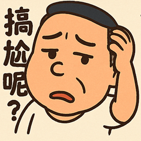
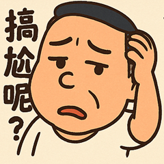

👋 歡迎來到我的個人網頁

我叫章瑞峰（Tomson Chang），是一位橫跨傳統實戰與數位創新的領航者。三十多年來，我深耕台灣市場，從量販、超市、便利商店到經銷商通路，皆累積豐富操盤經驗。曾在短短五年間帶領團隊，創造營收成長100%的成績，這背後仰賴的不只是策略，更是我對市場的敏銳嗅覺，以及團隊管理與執行力的徹底落實。 我相信，一個穩健的領導者不只要懂得規劃，更要能夠帶頭衝鋒。我擅長激發團隊潛力，設定明確目標，並以高標準執行節奏，確保每一項任務落地生根。這種高度紀律與彈性思維，是我多年來穩健成長的核心。 而在事業之外，我是個沉醉於品酒藝術的生活玩家。無論是威士忌的泥煤煙燻還是紅酒的成熟果香，我享受那份來自時間與風土交織的魅力。品酒培養了我更細膩的觀察力與耐心，也啟發我用不同角度看世界。 近年來，我積極投入數位創作領域，從多語音個人網站、原創貼圖到互動遊戲開發，將我的品牌精神轉化為觸手可及的內容。我正持續用創意與策略拓展影響力，在穩健中前行，在創新中突破。
My name is Tomson Chang, a seasoned strategist and brand leader who bridges traditional market expertise with modern digital creativity. With over three decades of experience, I’ve navigated Taiwan’s retail landscape—from hypermarkets and supermarkets to convenience stores and wholesaler—building solid sales foundations and expanding brand influence. In just five years, I successfully led a high-performing team to achieve 100% revenue growth. This was not luck—it was the result of strategic precision, relentless execution, and a leadership style that balances clear direction with team empowerment. I believe a strong leader must not only set the vision but also roll up their sleeves and lead from the front. Beyond business, I am a passionate whisky and wine enthusiast. To me, tasting is more than flavor—it's a journey through time, terroir, and craftsmanship. This refined sense of observation and patience flows into everything I do, including how I lead, think, and create. In recent years, I’ve actively expanded into digital content creation—developing a multilingual personal website, original sticker designs, and interactive games. These projects reflect my commitment to transforming stories and experiences into engaging, accessible formats. As I move forward, I continue to chart a steady course—anchored in tradition, driven by innovation.
🎬 多國影音自我介紹
🍷 品酒天地
🍇 葡萄酒
熟悉各大產區如波爾多、布根地、納帕、智利等，擅長解讀酒標與年份，並以「香氣－酸度－單寧－酒體」為品評架構。 喜歡將紅白酒搭配在宴席、餐酒會或高端招待場景中，增添品飲的文化與情境深度。
🍷 葡萄酒品飲四步驟（The 5 Steps of Wine Tasting）
1. 看（Look）—— 觀色，「視覺是品味的前奏，色澤是酒齡與品種的密語。」
把酒倒入透明杯中，拿至白色背景前，稍微傾斜觀察色澤。
紅酒可能從寶石紅、磚紅到紫黑；白酒則從稻草黃到金黃琥珀。
色澤可透露年齡（年輕酒色深、陳年酒轉磚紅或金黃）與酒體濃度。
2. 轉（Swirl）—— 醒酒與釋香，「輕轉酒杯，讓它張口說話。」
將鼻子靠近杯口，分辨香氣層次。
分辨第一香氣（果味、花香）、第二香氣（發酵產生，如奶油、酵母）、第三香氣（桶陳或瓶陳後產生，如皮革、煙燻、香草）。
可分段進行：第一下直接聞，第二下旋轉後聞，第三下閉眼深吸氣。
3. 聞（Smell）—— 嗅覺探索，「鼻子是靈魂的記錄器，香氣是葡萄的記憶。」
將鼻子靠近杯口，分辨香氣層次。
分辨第一香氣（果味、花香）、第二香氣（發酵產生，如奶油、酵母）、第三香氣（桶陳或瓶陳後產生，如皮革、煙燻、香草）。
可分段進行：第一下直接聞，第二下旋轉後聞，第三下閉眼深吸氣。
4. 嚐（Taste）—— 品味酒體，「一口入口，千層滋味。」
輕啜一口，讓酒在口中滑動，覆蓋舌面與齒齦。
感受酸度、甜度、單寧、酒精感與酒體厚度。
注意入口、中段與尾段的變化，是否有果香轉辛香或木質等演進。
5. 想（Think）—— 回韻與整體評估，「一口餘韻，勝過千言萬語。」
注意餘韻的長短與內容，有些酒會留下水果殘香，有些是煙燻、香料、甚至礦石感。
長尾韻通常代表酒的結構與品質更完整。
最後給這杯酒一個總體印象：它是否平衡？是否有特色？你會想再喝第二杯嗎？
📌 貼心提醒
白酒太冷、紅酒太熱都是浪費香氣！
建議溫度：白酒：8～12°C、紅酒：15～18°C
不要加冰塊！ 除非你在喝的是超市特價甜白或香檳調飲。
搭餐原則：紅配肉、白配魚，不過也別太死板，嘴巴說了算。
記錄下來！ 建議準備一份《葡萄酒品飲筆記表》來養成感官記憶。
🥃 威士忌
從蒸餾技藝、泥煤風味、橡木桶熟成，到產區特色（如蘇格蘭高地、艾雷島、日本等），我對單一麥芽威士忌有深入研究。 喜歡探索不同年份與桶型帶來的風味層次，也樂於與同好分享搭配料理的技巧與心得。
威士忌的世界充滿變化，無論是雪莉桶的香甜、波本桶的香草、或泥煤桶的煙燻，每一種風格都值得細細品味。 我特別著迷於酒體的變化與餘韻的層次，這也是我常與朋友分享的話題與熱情來源。
🥃 威士忌品飲五步驟（The 5 Steps of Whisky Tasting）
1. 觀色（Look）「先用眼睛喝酒，再用舌頭泯酒。」
把威士忌倒進透明杯中（Glencairn 杯最為理想），放在白底前觀察。
顏色範圍從淡金、琥珀到深銅紅，可反映桶型（如波本桶或雪莉桶）與年份。
輕搖杯子，看它在杯壁上的「酒腿」（legs）流速與黏稠度，這代表酒體的厚度與酒精含量。
2. 聞香（Nose）「鼻子比舌頭誠實，別急著喝。」
輕輕旋轉酒杯，讓香氣釋放。
先遠距離聞，再靠近聞，分辨出頭香（Top Notes）、基調與底蘊。
可聞出花香、水果、香草、蜂蜜、煙燻、泥煤、橡木等各種香氣。
若酒精刺鼻，可加入1-2滴水（非冰水），幫助香氣開展。
3. 啜飲（Taste）「輕啜一口，讓酒在舌上跳舞。」
含一小口酒，讓它在舌頭上停留、流動，感受甜、酸、苦、辣的平衡。
注意前段（入口甜香）、中段（香料木質）、後段（收尾、回甘）。
嘗試深吸氣與吐氣，放大味覺的層次。
泥煤系、雪莉桶或波本桶風味差異此時會非常明顯。
4. 品觸感（Mouthfeel）「如絲綢？如油脂？還是如刀鋒？」
感受酒體的質地，是輕盈還是厚重？溫潤或刺激？
酒精感是否平衡？是否有如奶油般滑順或如煙燻般強烈？
5. 回味（Finish）「好酒，餘韻留得住；壞酒，嘴巴想漱口。」
收尾的長短與變化，短則立即消散，長則在喉頭縈繞數十秒。
品出是否有果乾、咖啡、巧克力、煙燻、海鹽、胡椒等風味殘留。
好的威士忌會讓你想再喝第二口、第三口──然後打開錢包。
📌 貼心提醒
避免加冰塊：會凍住香氣；除非你只是想「喝」，不是來「品」的。
搭配食物？：最好空口或搭配無強烈味道的食物如水煮馬鈴薯或奶油餅乾。
與人分享：一個人喝是孤獨，兩個人喝是對話，三個人喝是故事。


 
